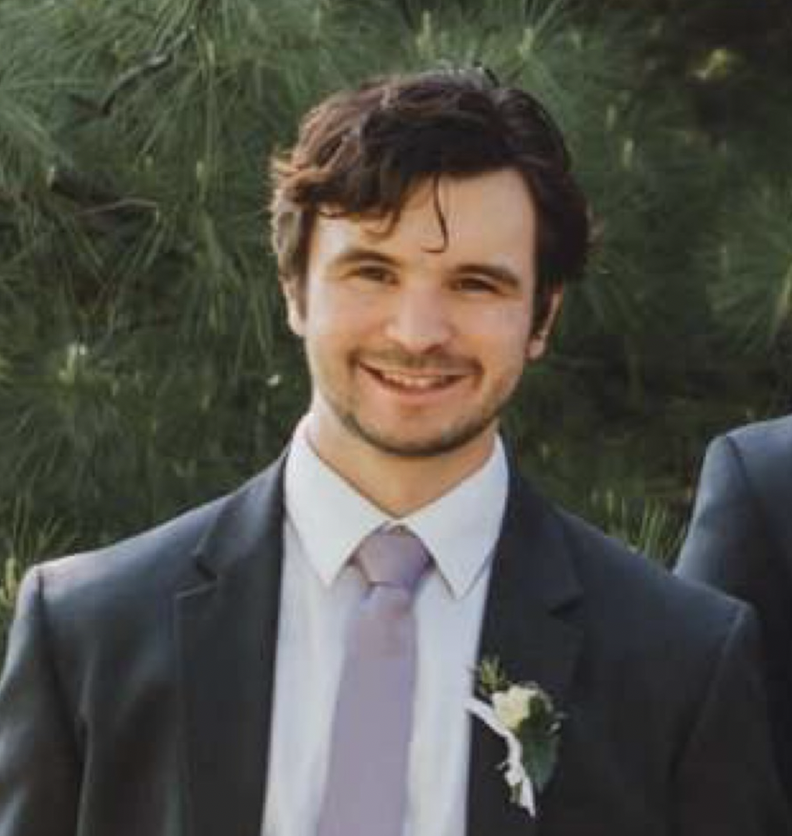

|
Justin Dulay
I am a 2nd year PhD student at Notre Dame CSE,
where I work on computer vision and deep learning in the lab of Dr. Walter Scheirer.
My research concerns psychophysics and creating better latent representations of data with the help of crowd-sourced human labeling.
I received my BS in computer science from Saint Louis University in May 2021,
with research in machine learning and deep metric learning under the advising of Dr. Abby Stylianou.
Previously, I have worked for Centene as a software developer,
and at the FDA
as a research apprentice.
Email /
CV /
Github /
LinkedIn /
Twitter
|

|
|
Research
|
Using Human Perception to Regularize Transfer Learning
Justin Dulay,
Walter J. Scheirer
arXiv, 2022
Perceptual measurements as regularizing terms in transfer learning tasks.
|
Measuring Human Perception to Improve Open Set Recognition
Jin Huang,
Derek Prijatelj,
Justin Dulay,
Walter J. Scheirer
arXiv, 2022
Thresholding symbolic reaction times of neural networks.
|
Guiding Machine Perception with Psychophysics
Justin Dulay,
Sonia Poltoratski,
Till S. Hartmann,
Samuel E. Anthony,
Walter J. Scheirer
arXiv, 2022
Perspective piece on psychophysics and machine learning.
|
The Sorghum-100 Dataset
Justin Dulay,
Chao Ren,
Greg Rowles,
Abby Stylianou
CVPR Workshop on Fine-Grained Visual Categorization (FGVC8), 2021
Created a novel dataset of RGB sorghum crop images.
|
Multi-resolution Outlier Pooling for Sorghum Classification
Chao Ren,
Justin Dulay,
Greg Rowles,
Duke Pauli,
Nadia Shakoor,
Abby Stylianou
CVPR Workshop on Agriculture Vision , 2021
Introduced novel dataset of sorghum crops and developed a novel pooling strategy combining max and average pooling.
|
|
Projects
SLU COVID-19 Capstone Deep Learning
- In this project, we utilized Graph Neural Network (GCNs), on top of the existing work from Deep Tracer
under the supervision of Jie Hou. The project utilized the efficiency of the Traveling Salesman Problem (TSP)
to abstract protein routing from given cryogenic electroscopic data to predicted tertiary proteins as a graph problem. This project was also featured
in the SLU Senior Legacy Symposium.
MEDLaunch
- During my time at SLU, I remained the longest standing president at MEDLaunch, a student-led biomedical startup incubator. During my first year,
I was the youngest team leader in the history of the program, creating a proprietary communications mobile application. Later, I served as the VP
before becoming the executive President. I recruited other executive board members, networked with the St. Louis entrepreneurship community, and
conducted a year-long curriculum designed to help student-entrepreneurs build their first companies - with a focus on biomedical devices and software.
|
|
{kind=link}